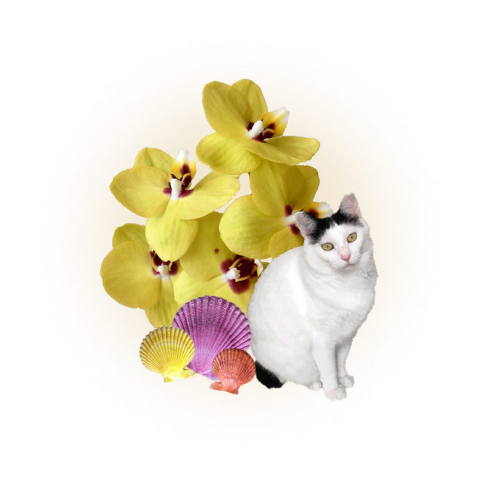
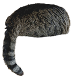
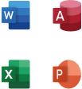
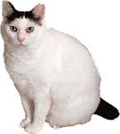

PROFILE
私について

猪狩実保
Miho Igari
前職でWebサイトの更新作業に携わっていたことからWeb制作に興味をもち、放送大学や職業訓練でITやコーディングについて学んできました。
現在はKaien代々木で就労移行訓練を受けており、専門講師の指導を受けながらWeb制作を行っています。
猫と花、ご当地怪談、組み技系格闘技が好きです。
WORKS
制作例
- 概要
- 発達障害児を対象にしたブラジリアン柔術ジムの新規会員獲得を目的としたWebサイト。親子が安心して通える環境を提供し、子供の発達を支援することを訴求する。
- ターゲット
- ３－１５歳以下の発達障害を持つ子供とその保護者
- アピールポイント
- 発達障害を持つ子供の保護者が抱えるニーズを想定し、ここなら安心して子供を通わせられそうだと思ってもらえるような導入文や色合い、あしらいの使い方を意識した。
- 制作ツール
- デザインカンプ：Photoshop
- 制作時間
- 企画・設計：約2か月実装：約3週間

SKILLS
スキルリスト
基本が身についています
UI/UX
- HTML
- 基本的なタグの使い方を理解してwebページの骨格を組み立てることができる。
- CSS
- デザインカンプに基づいてhtml文書の体裁を整えたりシンプルな動きをつけることができる。
Adobe
- Illustrator
- チラシや名刺、シンプルなアイコンを制作できる。

- Photosohp
- デザインカンプの制作と写真の色調変更、簡単な合成や不要物の修正などができる。
前職で使用していました

- Microsoft Office
- MOS(Word Excel PowerPoint)を所持している。Accessの基本的な操作が可能。
- WordPress
- WPで構築された自社サイトの更新作業をしていた。職業訓練ではLocal環境で既存テーマを用いたサイト構築を学んだ。
- Indesign
- 機関紙制作補助の際、文字組の調整を行うために使用した。
職業訓練で学習しました
- JavaScript
- jQueryを使ってハンバーガーメニュー等の動的な効果の挿入
- php
- 簡単な問い合わせフォームの作成。
- MariaDB
- 簡単な住所録の作成と編集。
